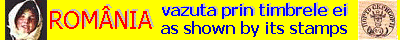

|
Victor Manta, Suisse |
|
Je suis un collectionneur suisse de timbres-poste, né en 1944, marié
et père d'une fille. Je suis spécialisé en management technique et en
communication inter-culturelle, et suis titulaire d'une maîtrise
de physique. Depuis environ 35 ans j'ai choisi l'art sur les timbres comme principal centre d'intérêt philatélique, mais d'autres thèmes m'intéressent également. Parmi eux, l'histoire vue au travers des timbres. En février 2001 j'ai fondé la Philatelic Webmasters Organization (PWO), en en devenant son Président et un de ses principaux animateurs. |

|
Je suis membre de l'Union
des associations philatéliques suisses. En 1996 j'ai fondé le "Paintings
and Arts on Stamps Internet Club" (PASIC
- Club Internet
dédié à la peinture et aux arts sur timbres-poste), une association
qui a été rejointe par plus de 300 membres originaires de plus de 55
pays différents. PASIC est affilié à la plus importante association
thématique mondiale,
ATA (American Topical Association). Mes autres domaines d'intérêt sont la publication sur le Web, l'informatique, les arts visuels, la musique et la philosophie. Je suis également particulièrement intéressé par la Roumanie, tant en ce qui concerne son art et son histoire, que ses timbres. Comme autres passe-temps, je devrais mentionner le tennis et le tennis de table, aussi bien en tant que joueur que spectateur. |
Liens vers mes pages PWO :
- L'amour dans l'art
- Tableux roumains fusillés
- Nations Unies Genève: Une administration postale amicale avec les philatélistes.
|
Créé le
24 juillet 2001. Mis à jour le 16.09.01
. |
|
|
|
 |